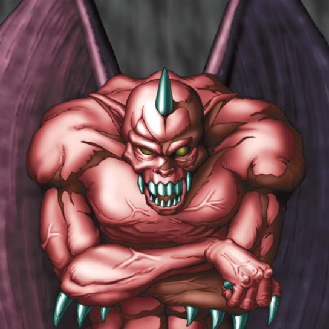

Ryu-Kishin

STATS
ATK: 1000
DEF: 500DECK COST
Deck Cost per Card: 15Fusion List (7 Possible Fusions)
- Ryu-Kishin + Droll Bird = Whiptail Crow
- Ryu-Kishin + Job-Change Mirror = Summoned Skull
- Ryu-Kishin + Masked Sorcerer = Ryu-Kishin Powered
- Ryu-Kishin + Mavelus = Whiptail Crow
- Ryu-Kishin + Nemuriko = Ryu-Kishin Powered
- Ryu-Kishin + Sectarian of Secrets = Ryu-Kishin Powered
- Ryu-Kishin + Tyhone = Whiptail Crow